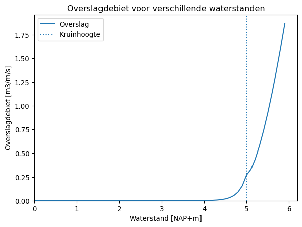

import matplotlib.pyplot as plt
import numpy as np
from copy import deepcopy
import pydra_core as pydraProfielen
In deze versie van Pydra is het profiel losgekoppeld van de belasting en statistiek. Hierdoor is het mogelijk om alleen een profiel te maken en overslag en oploop te berekenen zonder het koppelen van belasting en statistiek.
Er zijn drie manieren om een profiel aan te maken:<li>Import een .prfl</li>
<li>Import een schematisatie vanuit de GEBU-GEKB tool</li>Profiel
Het Profile is de basis voor elk profiel. Als argument moet een naam voor het profiel worden opgegeven.
profiel = pydra.Profile("test_profiel")Handmatig
Het Profile object heeft allemaal functies (startend met set_…()) om het profiel te veranderen. Er zijn globaal drie dingen die aan een profiel kan veranderen:<li>Voorland</li>
<li>Voorliggende keringen</li>Dijkgeometrie
Voordat een profiel werkt moet een kruinhoogte, dijkorientatie en geometrie worden gedefinieerd. Een voorbeeld is gegeven in de onderstaande code.
# Kruinhoogte
profiel.set_dike_crest_level(8.0)
# Dijkorientatie
profiel.set_dike_orientation(90)
# Dijkgeometrie
profiel.set_dike_geometry([-6, 30], [-2, 10], [1.0, 1.0])De set_dike_geometry(x, y, r) heeft drie argumenten, de x-coordinaten, de y-coordinaten, en de ruwheden. Eventueel kunnen de ruwheden worden weggelaten, er wordt dan standaard met een ruwheid van 1.0 gerekend.
# Dijkgeometrie
profiel.set_dike_geometry([-6, 30], [-2, 10])Met de draw_profile() functie kan een plot van de doorsnede worden weergegeven.
profiel.draw_profile()Voorland
Een voorland kan worden toegevoegd met set_foreland_geometry(x, y) en heeft twee argumenten, de x-coordinaten en de y-coordinaten. Een profiel wordt altijd zo geschematiseerd dat de dijkteen op x = 0 ligt. Het voorland ligt altijd in het negatieve x-domein en de dijkgeometrie in het positieve x-domein.
# Voorland
profiel.set_foreland_geometry([-100, -70], [-3, -2])Merk op dat ondanks dat we hierboven het voorland hebben gedefinieerd lopend van -100 tot -70, pydra automatisch zorgt dat het voorland aansluit op de teen van de dijk (x = 0). Het voorland wordt dus gecorrigeerd zodat deze loopt van -30 naar 0. Zie de figuur hieronder.
profiel.draw_profile()Voorliggende kering
Een voorliggende kering, zoals een golfbreker kan worden toegevoegd met de functie set_breakwater(breakwater, hoogte). De functie heeft twee argumenten, het type Breakwater (gedefinieerd via Enum) en de hoogte van de Breakwater.
# Importeer de Breakwater Enum
from pydra_core import Breakwater
"""
Keuzes:
Breakwater.NO_BREAKWATER
Breakwater.CAISSON
Breakwater.VERTICAL_WALL
Breakwater.RUBBLE_MOUND
"""
# Hier wordt een RubbleMound als Breakwater ingesteld met een hoogte van NAP+3,0m
profiel.set_breakwater(Breakwater.RUBBLE_MOUND, 3.0)Dit geeft de volgende doorsnede.
profiel.draw_profile()Verwijderen van een voorliggende kering/voorland
Je kan een voorliggende kering/voorland verwijderen met de functies remove_breakwater() en remove_foreland().
# Verwijder voorland
profiel.remove_breakwater()
# Verwijder voorliggende kering
profiel.remove_foreland()Nu zonder voorland
profiel.draw_profile()
Importeer een .prfl
In plaats van handmatig een profiel te definiëren is het ook mogelijk om een .prfl te importeren. Hiervoor kan de classmethod Profile.from_prfl(prfl_path) worden gebruikt. Door het optionele argument name te definiëren kan een naam aan het profielbestand worden gegeven.
PRFL_PATH = "data/profielformaat.prfl"
profiel_prfl = pydra.Profile.from_prfl(
PRFL_PATH, profile_name="Profiel vanuit een prfl"
)Dat geeft de volgende doorsnede:
profiel_prfl.draw_profile()Import een schematisatie vanuit de GEBU-GEKB tool
Het is ook mogelijk om een profiel te importeren uit de 1.sql van de GEBU-GEKB plugin voor Hydra-Ring. Hiervoor kan de classmethod Profile.from_gebugekb_tool(sql_path) worden gebruikt. De opzet van de classmethod/functie is hetzelfde als voor het importeren van een .prfl.
SQL_PATH = "data/1.sql"
profiel_sql = pydra.Profile.from_gebugekb_tool(
SQL_PATH, profile_name="Profiel vanuit een 1.sql"
)Dat geeft de volgende doorsnede:
profiel_sql.draw_profile()Exporteer het Profile object naar een .prfl
Het is mogelijk om een Profile object te exporteren naar een .prfl. Handig als je bijvoorbeeld schematisaties uit de GEBUGEKB-tool wilt omzetten naar een .prfl, of veel profielen wilt genereren met een loop.
Je kan een profiel exporteren met de functie to_prfl(export_path). Het is met optionele argumenten mogelijk om een ID (toevoegen van argument id = “voorbeeld_id”) of een memo (toevoegen van argument memo = “een memo”) toe te voegen. Hieronder exporteren we de profielen die we eerder hebben geschematiseerd naar de RO1099 map.
# Zonder ID of memo
profiel.to_prfl("data/export_profiel_1.prfl")
# Met memo
profiel_prfl.to_prfl("data/export_profiel_2.prfl", memo="mooi profiel")
# Met ID en memo
profiel_sql.to_prfl(
"data/export_profiel_3.prfl", id="test", memo="profiel uit de gebu-gekb tool"
)Golftransitie over voorland
Het is mogelijk om met het Profile object de golftransitie over het voorland te bepalen. In deze demonstratie bepalen we het effect van het voorland voor het volgende profiel:
profiel_prfl.draw_profile()
De functie transform_wave_conditions(h, hs, tspec, wdir) kan gebruikt worden om de getransformeerde golfcondities te bepalen. Met het optionele argument tp_tspec wordt de spectrale golfperiode omgerekend naar de piekperiode (welke wordt gebruikt in de DaF module) en vervolgens weer teruggerekend naar de spectrale golfperiode. Standaard is tp_tspec gelijk aan 1.1.
# HR
h = 6.0
hs = 2.0
tspec = 5.0
wdir = 84
# De invoer kunnen floats of ints zijn
_h, _hs, _tspec, _wdir = profiel_prfl.transform_wave_conditions(h, hs, tspec, wdir)
print("h", h, "->", _h)
print("hs", hs, "->", _hs)
print("tspec", tspec, "->", _tspec)
print("wdir", wdir, "->", _wdir)h 6.0 -> 6.0
hs 2.0 -> 1.2000734264388138
tspec 5.0 -> 5.0
wdir 84 -> 81.43355290660854Je kan ook arrays gebruiken. Merk op dat we hieronder alleen de waterstand h en significante golfhoogte Hs als arrays hebben gedefinieerd. Wanneer je een deel van de input parameters (h, hs, tspec, wdir) als array definieerd en een deel niet, vult pydra deze automatisch aan. In het onderstaande geval worden alle combinaties met een tspec van 5.0 gerekend en een wdir van 84.
# HR
h = [3.0, 4.0, 5.0, 6.0]
hs = [2.0, 2.2, 2.4, 2.6]
tspec = 5.0
wdir = 84
# De invoer kunnen floats of ints zijn
_h, _hs, _tspec, _wdir = profiel_prfl.transform_wave_conditions(h, hs, tspec, wdir)
print("h", h, "->", _h)
print("hs", hs, "->", _hs)
print("tspec", tspec, "->", _tspec)
print("wdir", wdir, "->", _wdir)h [3.0, 4.0, 5.0, 6.0] -> [3. 4. 5. 6.]
hs [2.0, 2.2, 2.4, 2.6] -> [0.80432189 1.08827125 1.32752829 1.52129885]
tspec 5.0 -> [5. 5. 5. 5.]
wdir 84 -> [78.72302003 79.97242374 80.81683168 81.43355291]Golfoverslag en overloop
Met een Profile object kan golfoverslag en overloop bepalen met de functie calculate_overtopping(h, hs, tspec, wdir). Net zoals bij de golftransformatie over het voorland kan de invoer bestaan uit floats, ints, arrays of een combinatie. Hieronder wordt deze functie gedemonstreerd voor dezelfde doorsnede waarbij de golftransformatie over het voorland is gedemonstreerd (zie doorsnede hierboven).
# HR
h = 4.0
hs = 2.0
tspec = 5.0
wdir = 84
# Overslag
qov = profiel_prfl.calculate_overtopping(h, hs, tspec, wdir)
print("qov =", qov, "m3/m/s")qov = 0.016713478886021507 m3/m/sDoor bijvoorbeeld de waterstand als array te definieren kan heel eenvoudig het overslagdebiet geplot worden tegen de waterstand.
# Bepaal een range aan waterstanden
h = np.arange(0.0, 6.0, 0.1)
hs = 1.0
tspec = 4.0
wdir = 84
# Overslag
qov = profiel_prfl.calculate_overtopping(h, hs, tspec, wdir)
# Plot
plt.figure()
plt.plot(h, qov, label="Overslag")
plt.axvline(5.0, ls=":", label="Kruinhoogte")
plt.title("Overslagdebiet voor verschillende waterstanden")
plt.xlabel("Waterstand [NAP+m]")
plt.xlim(0, None)
plt.ylabel("Overslagdebiet [m3/m/s]")
plt.ylim(0, None)
plt.legend(loc="best")
plt.show()
Oploophoogte
Hetzelfde is ook mogelijk voor de 2% oploophoogte. Hiervoor kan de functie calculate_runup(h, hs, tspec, wdir) worden gebruikt.
# HR
h = 4.0
hs = 2.0
tspec = 5.0
wdir = 84
# Oploop
z2p = profiel_prfl.calculate_runup(h, hs, tspec, wdir)
print("z2% =", z2p, "NAP+m")z2% = 6.380539983822968 NAP+mVoorbeeld voor meerdere golfhoogtes bij eenzelfde waterstand, spectrale golfperiode en hoek van golfinval.
# Bepaal een range aan golfhoogtes
h = 4.0
hs = np.arange(0.0, 3.0, 0.1)
tspec = 5.0
wdir = 84
# Oploop
z2p = profiel_prfl.calculate_runup(h, hs, tspec, wdir)
# Plot
plt.figure()
plt.plot(hs, z2p, label="Oploophoogte")
plt.title("Oploophoogte voor verschillende golfhoogtes")
plt.xlabel("Significante golfhoogte [m]")
plt.xlim(0, None)
plt.ylabel("Oploophoogte [NAP+m]")
plt.ylim(4, None)
plt.legend(loc="best")
plt.show()
Kruinhoogte bepalen
Als laatste is het mogelijk om de kruinhoogte te bepalen gegeven een overslagdebiet. Dit kan met de functie calculate_crest_level(q_critical, h, hs, tspec, wdir).
# HR
q = 0.01
h = 4.0
hs = 2.0
tspec = 5.0
wdir = 84
# Kruinhoogte voor 10 l/m/s
hbn = profiel_prfl.calculate_crest_level(q, h, hs, tspec, wdir)
print("Benodigde kruinhoogte =", hbn, "NAP+m")Benodigde kruinhoogte = 5.14724745829701 NAP+mMet de overslag functie kunnen we makkelijk controleren of deze kruinhoogte klopt
# HR
q = 0.01
h = 4.0
hs = 2.0
tspec = 5.0
wdir = 84
# Check
test_prfl = deepcopy(profiel_prfl)
test_prfl.set_dike_crest_level(hbn)
qov = test_prfl.calculate_overtopping(h, hs, tspec, wdir)
print("Check met aangepaste kruinhoogte:", round(qov, 6), "m3/m/s")Check met aangepaste kruinhoogte: 0.01 m3/m/sAls we dan toch bezig zijn, kunnen we een mooi grafiekje voor de kruinhoogte bepaling niet achterwege laten…
# Bepaal een range aan overslagdebieten
q = np.arange(0.001, 0.1, 0.001)
h = 4.0
hs = 2.0
tspec = 5.0
wdir = 84
# Oploop
hbn = profiel_prfl.calculate_crest_level(q, h, hs, tspec, wdir)
# Plot
plt.figure()
plt.plot(q, hbn, label="Kruinhoogte")
plt.title("Kruinhoogte voor verschillende overslagdebieten")
plt.xlabel("Overslagdebiet [m3/m/s]")
plt.xlim(0, None)
plt.ylabel("Kruinhoogte [NAP+m]")
plt.ylim(0, None)
plt.legend(loc="best")
plt.show()